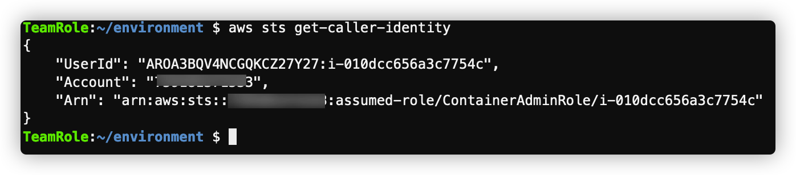
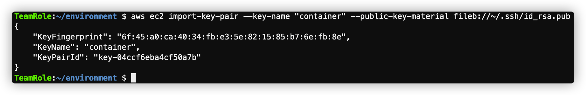

这是这个Workshop的第二步，准备管理环境。
本动手实验基于Cloud9 IDE，安装需要的工具。
echo "install libs"
sudo yum -y install jq gettext bash-completion moreutils
mv /bin/aws /bin/aws1
ls -l /usr/local/bin/aws
curl "https://awscli.amazonaws.com/awscli-exe-linux-x86_64.zip" -o "awscliv2.zip"
unzip awscliv2.zip
sudo ./aws/install
which aws_completer
echo $SHELL
cat >> ~/.bash_profile <<EOF
complete -C '/usr/local/bin/aws_completer' aws
EOF
source ~/.bash_profile
aws --version
curl -LO "https://dl.k8s.io/release/$(curl -L -s https://dl.k8s.io/release/stable.txt)/bin/linux/amd64/kubectl"
sudo install -o root -g root -m 0755 kubectl /usr/local/bin/kubectl
cat >> ~/.bash_profile <<EOF
source <(kubectl completion bash)
alias k=kubectl
complete -F __start_kubectl k
EOF
source ~/.bash_profile
kubectl version --client
curl -fsSL -o get_helm.sh https://raw.githubusercontent.com/helm/helm/master/scripts/get-helm-3
chmod 700 get_helm.sh
./get_helm.sh
helm version
helm repo add stable https://charts.helm.sh/stable
export ACCOUNT_ID=$(aws sts get-caller-identity --output text --query Account)
export AWS_REGION=$(curl -s 169.254.169.254/latest/dynamic/instance-identity/document | jq -r '.region')
test -n "$AWS_REGION" && echo AWS_REGION is "$AWS_REGION" || echo AWS_REGION is not set
echo "export ACCOUNT_ID=${ACCOUNT_ID}" | tee -a ~/.bash_profile
echo "export AWS_REGION=${AWS_REGION}" | tee -a ~/.bash_profile
aws configure set default.region ${AWS_REGION}
aws configure get default.region
source ~/.bash_profile
aws sts get-caller-identity
返回类似下面的字样表示配置成功（里面的 ContainerAdminRole 为我们前面步骤创建的） 
一定要确保这一步成功，否则不要往下操作，请检查EC2的Role的相关配置。
resize-ebs.sh#!/bin/bash
# Specify the desired volume size in GiB as a command line argument. If not specified, default to 20 GiB.
SIZE=${1:-20}
# Get the ID of the environment host Amazon EC2 instance.
INSTANCEID=$(curl http://169.254.169.254/latest/meta-data/instance-id)
# Get the ID of the Amazon EBS volume associated with the instance.
VOLUMEID=$(aws ec2 describe-instances \
--instance-id $INSTANCEID \
--query "Reservations[0].Instances[0].BlockDeviceMappings[0].Ebs.VolumeId" \
--output text)
# Resize the EBS volume.
aws ec2 modify-volume --volume-id $VOLUMEID --size $SIZE
# Wait for the resize to finish.
while [ \
"$(aws ec2 describe-volumes-modifications \
--volume-id $VOLUMEID \
--filters Name=modification-state,Values="optimizing","completed" \
--query "length(VolumesModifications)"\
--output text)" != "1" ]; do
sleep 1
done
#Check if we're on an NVMe filesystem
if [ $(readlink -f /dev/xvda) = "/dev/xvda" ]
then
# Rewrite the partition table so that the partition takes up all the space that it can.
sudo growpart /dev/xvda 1
# Expand the size of the file system.
# Check if we are on AL2
STR=$(cat /etc/os-release)
SUB="VERSION_ID=\"2\""
if [[ "$STR" == *"$SUB"* ]]
then
sudo xfs_growfs -d /
else
sudo resize2fs /dev/xvda1
fi
else
# Rewrite the partition table so that the partition takes up all the space that it can.
sudo growpart /dev/nvme0n1 1
# Expand the size of the file system.
# Check if we're on AL2
STR=$(cat /etc/os-release)
SUB="VERSION_ID=\"2\""
if [[ "$STR" == *"$SUB"* ]]
then
sudo xfs_growfs -d /
else
sudo resize2fs /dev/nvme0n1p1
fi
fi
chmod +x resize-ebs.sh
./resize-ebs.sh 50
ssh-keygen -t rsa -b 4096
aws ec2 import-key-pair --key-name "container" --public-key-material fileb://~/.ssh/id_rsa.pub
如果上面导入失败，可以尝试用如下命令
aws ec2 import-key-pair --key-name "container" --public-key-material file://~/.ssh/id_rsa.pub
导入成功会显示类似如下的内容： 